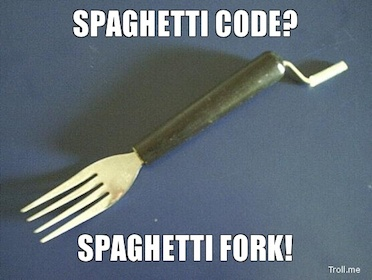

Production Code Analysis
Spaghetti Code

|  |
MonoRail
-
Pre Existing

-
Consumer

-
CRMS
-
CMS

-
Admin
-
Next?
How Dead Code Sticks Around
- Large teams aren't good at communicating what is no longer needed
- AB tests, never removing a loser
- One offs that are irrelevant over time
- Deprecation of old endpoints takes time
- Refactoring leaves dead code paths behind
- A dev trying to be 'safe' & creating new methods opposed to altering existing methods with multiple callers
- There are tests, but it is never used in production
- etc...
All code is bad

Also, the bridge was designed as a suspension bridge, but nobody actually knew how to build a suspension bridge, so they got halfway through it and then just added extra support columns to keep the thing standing
Less Code Is Better
- is easier to reason about
- is easier to upgrade (Rails, Ruby, and Gem versions)
- is easier to refactor
- is easier to adapt to new requirements
Solution: Clean Up Dead Code
- If "All Code is Bad"
- Less Code is Better
- Keep Only the Code Needed, No More
All code is bad
They left the suspension cables because they're still sort of holding up parts of the bridge. Nobody knows which parts, but everybody's pretty sure they're important parts.
How to know: Production Code Analysis
Nobody knows which parts, but everybody's pretty sure they're important parts.
Analyzing Production Code
- Use NewRelic, skylight.io, or Appneta Traceview (formerly Tracelytics)
- Custom Stats Instrumentation
- Use Logs
- Production Code Coverage
Street Cred

(grown up marketing speak: "steet cred" => "social proof")
Team Effort
[~/projects/deals]git log --numstat --pretty="%H" --author="dan.mayer" --since="2 years ago" app | awk 'NF==3 {plus+=$1; minus+=$2} END {printf("+%d, -%d\n", plus, minus)}'
+20973, -47034
[~/projects/deals] git log --numstat --pretty="%H" --since="2 years ago" app | awk 'NF==3 {plus+=$1; minus+=$2} END {printf("+%d, -%d\n", plus, minus)}'
+197326, -215514
Using 3rd Party tool (NewRelic)
Easiest way, look transactions over last 7 days: (note won't help with specific formats or never hit endpoints)

Using 3rd Party tool (NewRelic)
LS made a gem to help, newrelic_route_check compare NR reports to Rails routes. download the `controller_summary.csv`

run `bundle exec rake newrelic:compare_with_routes`
found 335 uniq new relic controller action hits found 562 uniq Rails routes controller action pairs exists in new relic, but not in routes: 0 never accessed in new relic stats: *** Pipeline::DealsController#show Pipeline::EmailTemplatesController#show SubscribeButtonController#dropdown_for_deal ... AuthorizationRulesController#graph AuthorizationRulesController#change
Stats Instrumentation
- No NewRelic: No Problem
- Background Events Executed: All events being triggered?
- Emails Sent: Are you still sending all your mailers?
- Views Rendered: partials, templates, and layouts
- One Off Trackers: usage of code branches & other hard to verify code
- Production Performance Comparisons: What's faster on production data
- Translations Usage: How many translation keys are you loading in memory & never using
Stats Instrumentation: No NewRelic, No Problem
yo code goes here for both controller#action counts and
render#time counts
Stats Instrumentation: Background Events Executed
# Example for Resque background jobs
STATSD = Statsd.new(host, port).tap{|sd| sd.namespace = 'app_name'}
def before_perform(*args)
STATSD.increment "resque.processed.#{get_event_name}"
end
def after_perform(*args)
STATSD.increment "resque.completed.#{get_event_name}"
endStats Instrumentation: Emails Sent
# Example for ActionMailer
STATSD = Statsd.new(host, port).tap{|sd| sd.namespace = 'app_name'}
class BaseMailer < ActionMailer::Base
def initialize(method_name=nil, *parameters)
STATSD.increment "mailers.base_mailer.#{method_name}" if method_name
#...
super(method_name, *parameters)
end
endStats Instrumentation: Views Rendered
ActiveSupport::Notifications.subscribe /render_partial.action_view|render_template.action_view/ do |name, start, finish, id, payload|
RenderTracker.track_template(name, start, finish, id, payload) unless name.include?('!')
end
class RenderTracker
def self.track_template(name, start, finish, id, payload)
if file = payload[:identifier]
Statsd.increment "views.#{file}"
end
if layout = payload[:layout]
Rails.logger.info "[RenderTracker] layout: #{layout}"
end
end
endStats Instrumentation: Views Rendered
We made a gem for that and some helpers: Flatfoot
FLATFOOT = Flatfoot::Tracker.new(Redis.new)
ActiveSupport::Notifications.subscribe /render_partial.action_view|render_template.action_view/ do |name, start, finish, id, payload|
FLATFOOT.track_views(name, start, finish, id, payload) unless name.include?('!')
end
FLATFOOT.used_views
=> ["app/views/home/index.html.erb",...
FLATFOOT.unused_views
=> ["app/views/something/_old_partial.html.erb",...Stats Instrumentation: One Off Trackers
# Example Tracking a code path
class HomeController < ApplicationController
def show
if request.xhr?
#some weird logic
STATSD.increment "deprecated.home_controller.show.xhr"
end
respond_to do |format|
format.html { STATSD.increment "deprecated.home.show.html" }
format.json { STATSD.increment "deprecated.home.show.json" }
format.mobile { STATSD.increment "deprecated.home.show.mobile" }
end
end
endStats Instrumentation: Production Performance Comparisons
shout out to @ubermajestix (Tyler Montgomery) for showing me the timing trick
STATSD = Statsd.new(host, port).tap{|sd| sd.namespace = 'app_name'}
def example_html_stripping_method
strip_method = rand(2)&1 == 0 ? 'nokogiri' : 'strip_tags'
desc = STATSD.time("application_helper.example_html_stripping_method.#{strip_method}") do
if strip_method == 'strip_tags'
strip_tags(desc_raw).gsub(/^\s+/,'').gsub(/\s+$/,'')
else
Nokogiri::HTML.parse(desc_raw).text.strip
end
end
#...
endStats Instrumentation: Translations Usage
We made a gem for that @Chrismo (Chris Morris) built: Humperdink
class KeyTracker
def initialize(redis, key)
redis_set = Humperdink::RedisDirtySet.new(:redis => redis, :key => key, :max_dirty_items => 9)
@tracker = Humperdink::Tracker.new(redis_set, :enabled => true)
end
def on_translate(locale, key, options = {})
begin
if @tracker.tracker_enabled
requested_key = normalize_requested_key(key, options)
@tracker.track(requested_key)
end
rescue => e
@tracker.shutdown(e)
end
end
...Production Code Coverage: Coverband
- Based on `set_trace_func`
- It would be better to be based on `Coverage` but there is a bug in Ruby
- (Looking for C help, so I can try to patch Ruby, anyone got those skills?)
- Performance hit reduced by sampling
- github.com/danmayer/coverband
- Example Output: churn-site coverage
Production Code Coverage: Coverband
baseline = Coverband.parse_baseline
Coverband.configure do |config|
config.root = Dir.pwd
config.redis = Redis.new(:host => 'redis.host.com')
config.coverage_baseline = baseline
config.root_paths = ['/app/']
config.ignore = ['vendor']
config.startup_delay = Rails.env.production? ? 15 : 1
config.percentage = Rails.env.production? ? 20.0 : 90.0
config.stats = Statsd.new('stat.my.com', 25)
config.verbose = Rails.env.production? ? false: true
endProduction Code Coverage: Coverband
#configure rake
require 'coverband'
Coverband.configure
require 'coverband/tasks'
#setup middleware in `config.ru`
require File.dirname(__FILE__) + '/config/environment'
require 'coverband'
Coverband.configure
use Coverband::Middleware
run ActionController::Dispatcher.newLogs
- Logs need to be searchable, real time is best. (ElasticSearch/Kibana, Splunk, Hadoop)
- All your logs should be in one place (cron, nginx access/error, background jobs, rails logs)
- If you have multiple apps that communicate they should be in the same system.
- Try to standardize log format & some keys / variables across systems
Logs: Better with Imprint
Another LS gem Imprint
- Request tracing in logs:
All Rails.logger calls during a request tagged with a trace_id - Exceptions include trace_id so you can fetch all logs related to a request that caused an exception
- Background Jobs failures include the trace_id to find the request that queued the job
- Cross app tracing, have client gems pass a header, and back end APIs will include the same trace_id as the initial front end request
Thanks
- Dan Mayer
- LivingSocial
(We're hiring)
Thanks for sending me to various conferences!
/